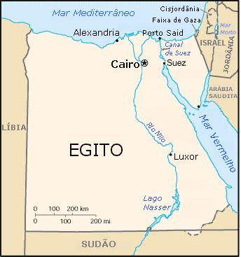

|
|
Egito Antigo
por Laiz Gabrieli Lapim da Costa
Rafaela
Donario

O territ�rio no qual se
desenvolveu a civiliza��o do Antigo Egito corresponde, em termos
tradicionais, � regi�o situada entre a primeira catarata do rio
Nilo, em Assu�o, e o Delta do Nilo. O Sinai, situado a leste do
Delta do Nilo, funcionou como via de acesso ao corredor
s�rio-palestino, designa��o atribu�da � faixa de terra que ligava o
Egito � Mesopot�mia. � oeste do Delta surge o deserto da L�bia (ou
deserto ocidental), onde se encontram v�rios o�sis dos quais se
destacam o de Siu�, Kharga, Farafra, Dakhla e Bahareia. O deserto da
�rabia (ou deserto oriental) estende-se at� ao Mar Vermelho. � sul
da primeira catarata situava-se a N�bia, cuja cultura e habitantes
j� eram vistos como estrangeiros. Em diversos momentos, o Egito
ultrapassou a primeira catarata e tomou posse de territ�rios N�bios,
onde obtinha diversas mat�rias-primas.
O territ�rio do Antigo Egito n�o deve ser por isso confundido com
o territ�rio da moderna Rep�blica �rabe do Egito, dado que esta se
estende para sul da primeira catarata do Nilo at� ao paralelo 22�N e
inclui partes do deserto da L�bia e do deserto da Ar�bia, bem como a
pen�nsula do Sinai.
Esta civiliza��o desenvolveu-se
gra�as � exist�ncia do rio Nilo, sem o qual o Egito n�o seria
diferente dos desertos que o cercam. Neste sentido, � bem conhecida
a frase do historiador grego Her�doto (que visitou o Egito em meados
do s�culo V a.C.), segundo a qual o Egito era um dom do Nilo,
retomando o historiador uma afirma��o anterior de Hecateu de
Mileto.
O rio Nilo era a fonte de vida do povo eg�pcio, que vivia
basicamente da agricultura.
No per�odo das cheias, as fortes
chuvas sazonais (junho a setembro), faziam o Rio Nilo transbordar,
encobrindo grandes extens�es de terras que o margeavam, assim, todos
os anos era necess�rio o trabalho do homem para medir, calcular, e
isso ocasionou o desenvolvimento da geometria e da matem�tica. Mas
tamb�m, este fen�meno fertilizava o solo ao depositar mat�ria
org�nica (fertilizante de primeira qualidade) neste.

Papiro com
c�lculos de geometria.
Ap�s as cheias, as margens do rio ficavam cobertas por h�mus -
adubo natural, que dava ao solo a fertilidade necess�ria para o
plantio. No tempo da estiagem, num trabalho de uni�o de for�as e de
conjunto, os eg�pcios aproveitaram as �guas do rio para levar a
irriga��o at� terras mais distantes ou construir diques para
controlar as cheias, protegendo o vale contra essas cat�strofes
terr�veis. Neste per�odo, os camponeses eram encaminhados para as
cidades, onde realizavam outros trabalhos que n�o a
agricultura.
Al�m de fertiliza��o do solo, o rio trazia grande
quantidade de peixes e dava chances a milhares de barcos que
navegavam sobre as �guas fluviais.
Templo de Abu Simbel

Os Eg�pcios dependiam,
portanto, deste rio e das inunda��es para a sua sobreviv�ncia.
Apesar da depend�ncia do Nilo, o Antigo Egito n�o deve ser
considerado apenas um dom de condi��es geogr�ficas especiais, como
afirmou Her�doto, que talvez quisesse, com esta afirma��o, explicar
por que o Egito j� era uma grande civiliza��o enquanto os gregos
ainda viviam em aldeias isoladas. O ponto fundamental � que o Antigo
Egito tamb�m s� existiu gra�as ao seu sistema de governo
centralizado, que organizava a enorme m�o-de-obra constitu�da pela
massa de camponeses, e ao engenho de seus construtores, que, desde
�pocas remotas, edificaram barragens e canais de irriga��o para
tirar o m�ximo proveito das �guas do Nilo.
Economia
A economia do Antigo Egito assentava na agricultura. Em teoria
todas as terras pertenciam ao rei, mas a propriedade privada foi uma
realidade. Os documentos revelam que a partir da IV dinastia
afirmou-se uma tend�ncia para a privatiza��o do solo, resultado de
doa��es de terras por parte do rei aos funcion�rios ou da aquisi��o
desta por parte dos mesmos. Por altura da V dinastia os templos
possu�am tamb�m grandes propriedades.

Detalhe de pintura mural no t�mulo do funcion�rio Sennedjem
(XIX dinastia), c. 1200 a.C. que mostra um campon�s arando a
terra.
Os agricultores lavravam a terra com um arado puxado por bois,
abriam canais e levantavam diques. A �poca das colheitas ocorria em
Abril, altura em que as espigas eram levadas para a eira, onde as
patas dos bois as debulhavam. Uma vez separados os gr�os da palha,
estes eram colocados em sacas que eram enviadas para os celeiros
reais. Estes celeiros armazenavam as colheitas que eram distribu�das
pelos funcion�rios e pela popula��o em geral.
Camponeses preparando a terra para o plantio.

A popula��o que n�o trabalhava nos campos dedicava-se a v�rias
tarefas como a produ��o de p�o e mel, a fabrica��o de cerveja, a
olaria e a tecelagem. A pesca era praticada ao anzol ou com
rede.
Camponeses na colheita do trigo.

O subsolo do Antigo Egito era rico em materiais de
constru��o, bem como em pedras preciosas. Entre os primeiros
destacavam-se os granitos cor de rosa das pedreiras do Assu�o, o
alabastro das proximidades de Amarna, o p�rfiro e os basaltos. As
pedras preciosas eram extra�das do Sinai (turquesa e malaquite) e
dos desertos do leste e do oeste (quartzo, feldspato verde, ametista
e �gata). Desde a �poca do Imp�rio Antigo que o Egito tinha contatos
comerciais com a regi�o s�rio-palestina (Biblos), de onde vinha a
madeira, escassa e necess�ria no Egito para fabricar o mobili�rio e
caix�es. Da N�bia o Egito exportava o �bano, as plumas de avestruz,
as peles de leopardo, incenso, marfim e, sobretudo, o ouro. Todo o
com�rcio estava baseado na permuta de bens, j� que a moeda s� surgiu
muito mais tarde, na L�dia do s�culo VIII ou VII a.C.

Pintura
mural do t�mulo do Vizir Rekhmir�, c. 1500-1450
a.C.
Escrita Eg�pcia

Caracteres eg�pcios
A escrita eg�pcia tamb�m foi algo importante para este povo, pois
permitiu a divulga��o de id�ias, comunica��o e controle de impostos.
Existiam duas formas de escrita: a dem�tica (mais simplificada) e a
hierogl�fica (mais complexa e formada por desenhos e s�mbolos). As
paredes internas das pir�mides eram repletas de textos que falavam
sobre a vida do fara�, rezas e mensagens para espantar poss�veis
saqueadores. Uma esp�cie de papel chamado papiro, que era produzido
a partir de uma planta de mesmo nome, tamb�m era utilizado para
registrar os textos.

Pedra de Roseta, descoberta em 1799 por soldados de Napole�o.
Ela serviu de chave para a tradu��o de hier�glifos para
Jean-Fran�ois Champollion.
Possui inscri��es em hier�glifos,
dem�tico eg�pcio e grego.
Caracteres
eg�pcios

ASPECTOS RELIGIOSOS
Eram polite�stas, ou seja, cultuavam v�rios deuses. Entre
eles se destacam R�, o deus sol; An�bis, o deus dos mortos; �sis,
deusa da fertilidade; Os�ris, deus da vegeta��o e juiz do Tribunal
de Os�ris e H�rus, filho de �sis e Os�ris.
As divindades s�o
representadas com formas humanas (polite�smo antropom�rfico), com
corpo de animal ou s� com a cabe�a de um bicho (polite�smo
antropozoom�rfico).
Cren�a na vida ap�s a morte (Tribunal de
Os�ris), da� a necessidade de preservar o cad�ver, desenvolvimento
de t�cnicas de mumifica��o, aprimoramento de conhecimentos
m�dico-anat�micos.

Deus An�bis, deus da morte e que presidia as
mumifica��es.
 Em um dos
pratos da balan�a est� o Em um dos
pratos da balan�a est� o
Cora��o do morto, e no outro, uma
pena.
A verdade era o contrapeso.
Aquele que possu�sse um
cora��o
Mais pesado que a pena, seria devorado por Amut, um
monstro com cabe�a de crocodilo e patas de le�o e
hipop�tamo.
 M�at M�at
Deusa da Justi�a e
da Verdade
No antigo Egito, zelava tamb�m pela Ordem Mundial,
que impede o retorno do mundo ao caos primitivo. � representada por
uma mulher que traz, na fronte, uma pena de avestruz, com a qual
pesava o cora��o dos mortos, com suas boas e m�s inten��es no
Julgamento Final.
Pir�mides

Pir�mides de Giz�
Devido � sua religi�o
polite�sta e � cren�a na vida ap�s a morte a sociedade eg�pcia
considerava de grande import�ncia � conserva��o do corpo e dos
pertences dos mortos. Por�m eram poucos os que tinham condi��es
econ�micas para serem mumificados, a este seleto grupo pertenciam
apenas os fara�s e alguns sacerdotes. A pir�mide tinha a fun��o
abrigar e proteger o corpo do fara� mumificado e seus pertences
(j�ias, objetos pessoais e outros bens materiais) dos saqueadores de
t�mulos. Logo, estas constru��es tinham de ser bem resistentes,
protegidas e de dif�cil acesso. Os engenheiros, que eram
sacrificados ap�s a conclus�o da pir�mide para n�o revelarem os
segredos internos, planejavam armadilhas e acessos falsos dentro das
constru��es. Tudo era pensado para que o corpo mumificado do fara� e
seus pertences n�o fossem acessados.
Pir�mide de Djoser
As pir�mides foram constru�das numa �poca em
que os fara�s exerciam m�ximo poder pol�tico, social e econ�mico no
Egito Antigo. Quanto maior a pir�mide, maior seu poder e gl�ria. Por
isso, os fara�s se preocupavam com a grandeza destas constru��es.
Com m�o-de-obra escrava, elas eram constru�das com blocos de pedras
que chegavam a pesar at� duas toneladas. Para serem finalizadas,
demoravam, muitas vezes, mais de 20 anos. Desta forma, ainda em
vida, o fara� come�ava a planejar e executar a constru��o da
pir�mide.

Pir�mide de Qu�ops, a maior das
tr�s pir�mides constru�das em Giz�.
A matem�tica foi muito empregada na constru��o das
pir�mides. Conhecedores desta ci�ncia, os arquitetos planejavam as
constru��es de forma a obter o m�ximo de perfei��o poss�vel. As
pedras eram cortadas e encaixadas de forma perfeita. Seus quatro
lados eram desenhados e constru�dos de forma sim�trica, fatores que
explicam a preserva��o delas at� os dias atuais.
Ao encontrarem as pir�mides, muitas delas
intactas, os arque�logos se depararam com muitas informa��es do
Egito Antigo. Elas possuem inscri��es hierogl�ficas,
contando a vida do fara� ou trazendo ora��es para que os deuses
soubessem dos feitos realizados pelo governante.
Mastabas
O nome mastaba foi dado a estes sepulcros em
tempos modernos. A palavra � de origem �rabe e significa banco. Isso
porque, quando rodeadas por dunas de areia quase at� a sua altura
total, fazem lembrar os bancos baixos constru�dos na parte externa
das casas eg�pcias atuais e nos quais os moradores sentam-se e tomam
caf� com os amigos.

Interior de uma mastaba
Tais monumentos eram orientados, ou seja, as suas quatro faces
estavam voltadas, respectivamente, para o norte, leste, sul e oeste.
A partir da cobertura da mastaba um po�o em �ngulo reto (1) permitia
descer atrav�s da constru��o at� o subsolo rochoso. A� era escavada
a c�mara funer�ria (2), na qual se acomodava o sarc�fago (3), que a
ela descia por meio do po�o. Este, ap�s o funeral, era obstru�do com
pedras para preservar a integridade do sepulcro e sua entrada era
disfar�ada para que se confundisse com o resto do teto.
 Na face oriental da
mastaba abria-se um primeiro compartimento, a capela (4) do culto
dirigido ao defunto; exatamente acima do sarc�fago, o seu mobili�rio
comportava, antes de tudo, a mesa para as oferendas (5), colocada ao
p� de uma estela, outro c�modo penetrava na mastaba: era o
"corredor" (sernab em �rabe) (6), onde eram colocadas as est�tuas do
morto (7). A estela marcava, ent�o, o limite de dois mundos, o dos
vivos e o dos motos; n�o se comunicavam entre si, salvo por uma
estreita fenda da altura de um homem. A estela era esculpida, de
maneira que desse a impress�o de uma porta � donde seu nome de
estela falsa-porta � e, por vezes, na sua moldura,
destacava-se uma est�tua: era o morto, que voltava para o meio dos
vivos. Ou, ent�o, havia uma trapeira, que se abria por cima das
folhas da porta e por onde despontava um busto: por ela estava o
morto espiando o visitante. Na face oriental da
mastaba abria-se um primeiro compartimento, a capela (4) do culto
dirigido ao defunto; exatamente acima do sarc�fago, o seu mobili�rio
comportava, antes de tudo, a mesa para as oferendas (5), colocada ao
p� de uma estela, outro c�modo penetrava na mastaba: era o
"corredor" (sernab em �rabe) (6), onde eram colocadas as est�tuas do
morto (7). A estela marcava, ent�o, o limite de dois mundos, o dos
vivos e o dos motos; n�o se comunicavam entre si, salvo por uma
estreita fenda da altura de um homem. A estela era esculpida, de
maneira que desse a impress�o de uma porta � donde seu nome de
estela falsa-porta � e, por vezes, na sua moldura,
destacava-se uma est�tua: era o morto, que voltava para o meio dos
vivos. Ou, ent�o, havia uma trapeira, que se abria por cima das
folhas da porta e por onde despontava um busto: por ela estava o
morto espiando o visitante.
Linha do Tempo
do Egito Antigo
- Per�odo Pr�-Din�stico -
Antes de 3200 a.C.
- Antigo Imp�rio �
3200
a.C. � 2800 a.C. (III
� VI dinastias).
- Primeiro Per�odo Interm�dio
� 2800
a.C. � 2000 a.C.
(per�odo de crises).
- M�dio Imp�rio �
2000
a.C. � 1650 a.C. (XI a
XIII dinastias).
- Segundo Per�odo Interm�dio
� 1650
a.C. � 1580 a.C.
(invas�o dos Hicsos; XIV � XVII dinastias).
- Novo Imp�rio �
1580
a.C. (XVIII � XXI dinastias).
- Per�odo L�bio -
1085
a.C. � 713 a.C. (XXII �
XXV dinastias; per�odo de crises).
- Per�odo Tardio � XXVI �
XXX dinastias (invas�o dos Persas entre 525 a.C. e
322
a.C.).
- Per�odo Ptolemaico �
322
a.C. � 30 a.C.
- Ocupa��o Romana �
31
a.C. � 407 d.C.
|